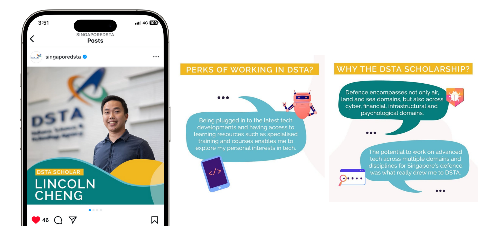
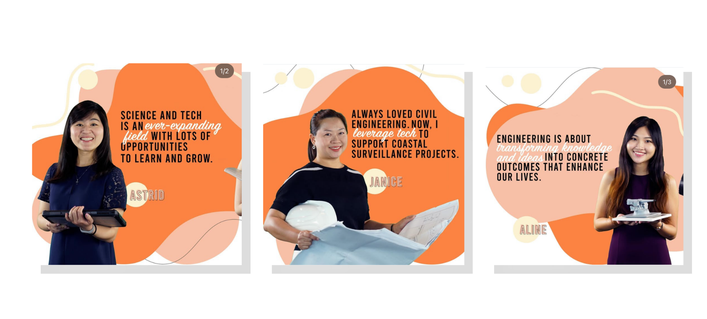
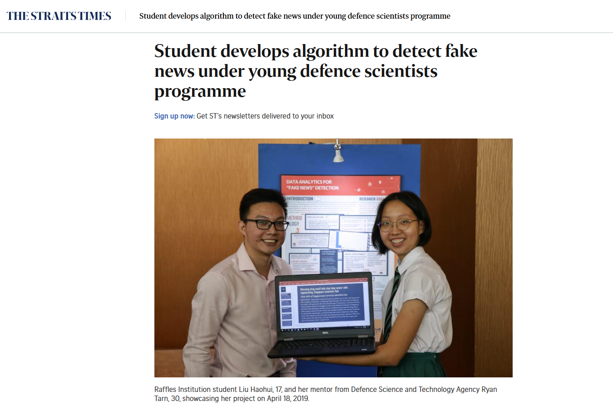

Jan 2019 – Apr 2021 · Singapore
Corporate Communications Asst. Manager
Where I learned to write with precision and purpose. Two years managing social media, employer branding, internal comms, and media relations for one of Singapore's most respected government agencies. Secured coverage in CNA, The Straits Times, and Lianhe Zaobao. All written by hand, pre-GenAI. Yes, really.
Facebook & Instagram
Managed Facebook and Instagram for DSTA — developing content that balanced recruitment messaging, organisational news, and brand storytelling for a public-sector audience where tone and trust matter as much as reach.
This included employee feature series, scholar spotlights, and recruitment campaigns designed to make a government agency feel human and attract the right talent.
20% growth in followers and engagement across Facebook & Instagram


Press Coverage
Led media relations — identifying story angles, pitching to journalists, and managing spokesperson preparation for Singapore's three main English and Chinese-language outlets. Coverage spanned technology programmes, national service milestones, and DSTA's young defence scientists initiative.
Secured coverage in Channel NewsAsia, The Straits Times and Lianhe Zaobao

Editorial
Wrote feature stories for internal and external publications — profiling engineers, covering technology milestones, and communicating DSTA's work in language that made complex defence tech accessible and compelling.